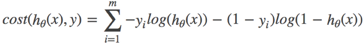

原文连接:https://www.cnblogs.com/Infi-chu/p/11430448.html
Infi-chu:
http://www.cnblogs.com/Infi-chu/
逻辑回归（Logistic Regression）是机器学习中的一种分类模型，逻辑回归是一种分类算法，虽然名字中带有回归，但是它与回归之间有一定的联系。由于算法的简单和高效，在实际中应用非常广泛。
一、简介
1.应用场景
- 广告点击率
- 是否为垃圾邮件
- 是否患病
- 金融诈骗
- 虚假账号
特点：都属于两个类别之间的判断。逻辑回归就是解决二分类问题的利器
2.公式
输入：
逻辑回归的输入就是一个线性回归的结果。
激活函数：
- sigmoid函数
-
判断标准
- 回归的结果输入到sigmoid函数当中
- 输出结果：[0, 1]区间中的一个概率值，默认为0.5为阈值
【注】
逻辑回归最终的分类是通过属于某个类别的概率值来判断是否属于某个类别，并且这个类别默认标记为1(正例),另外的一个类别会标记为0(反例)。（方便损失计算）
输出结果解释(重要)：假设有两个类别A，B，并且假设我们的概率值为属于A(1)这个类别的概率值。现在有一个样本的输入到逻辑回归输出结果0.6，那么这个概率值超过0.5，意味着我们训练或者预测的结果就是A(1)类别。那么反之，如果得出结果为0.3那么，训练或者预测结果就为B(0)类别。
所以接下来我们回忆之前的线性回归预测结果我们用均方误差衡量，那如果对于逻辑回归，我们预测的结果不对该怎么去衡量这个损失呢？我们来看这样一张图：
3.损失&优化
损失：
逻辑回归的损失，称之为对数似然损失，公式如下：
- 分开类别：
- 综合完整损失函数

eg.
【注】
log(P), P值越大，结果越小。
优化：
同样使用梯度下降优化算法，去减少损失函数的值。这样去更新逻辑回归前面对应算法的权重参数，提升原本属于1类别的概率，降低原本是0类别的概率。
二、API
-
sklearn.linear_model.LogisticRegression(solver='liblinear', penalty=‘l2’, C = 1.0)
-
solver可选参数:{'liblinear', 'sag', 'saga','newton-cg', 'lbfgs'}，
- 默认: 'liblinear'；用于优化问题的算法。
-
对于小数据集来说，“liblinear”是个不错的选择，而“sag”和'saga'对于大型数据集会更快。
-
对于多类问题，只有'newton-cg'， 'sag'， 'saga'和'lbfgs'可以处理多项损失;“liblinear”仅限于“one-versus-rest”分类。
-
penalty：正则化的种类
-
C：正则化力度
-
【注】
默认将数量少的当做正例
LogisticRegression方法相当于 SGDClassifier(loss="log", penalty=" "),SGDClassifier实现了一个普通的随机梯度下降学习。而使用LogisticRegression(实现了SAG)
三、分类评估方法
1.分类评估方法
精准率&召回率
混淆矩阵
在分类任务下，预测结果(Predicted Condition)与正确标记(True Condition)之间存在四种不同的组合，构成混淆矩阵(适用于多分类)
精确率（Precision）&召回率（Recall）
精确率：预测结果为正例样本中真实为正例的比例
召回率：真实为正例的样本中预测结果为正例的比例（查得全，对正样本的区分能力）
F1-score
还有其他的评估标准，F1-score，反映了模型的稳健型
分类评估报告API
- sklearn.metrics.classification_report(y_true, y_pred, labels=[], target_names=None )
-
- y_true：真实目标值
- y_pred：估计器预测目标值
- labels:指定类别对应的数字
- target_names：目标类别名称
- return：每个类别精确率与召回率
ret = classification_report(y_test, y_predict, labels=(2,4), target_names=("良性", "恶性"))
print(ret)
2.ROC曲线&AUC指标
TPR&FPR：
- TPR = TP / (TP + FN)
- 所有真实类别为1的样本中，预测类别为1的比例
- FPR = FP / (FP + TN)
- 所有真实类别为0的样本中，预测类别为1的比例
ROC曲线
ROC曲线的横轴就是FPRate，纵轴就是TPRate，当二者相等时，表示的意义则是：对于不论真实类别是1还是0的样本，分类器预测为1的概率是相等的，此时AUC为0.5
AUC指标：
- AUC的概率意义是随机取一对正负样本，正样本得分大于负样本的概率
- AUC的最小值为0.5，最大值为1，取值越高越好
- AUC=1，完美分类器，采用这个预测模型时，不管设定什么阈值都能得出完美预测。绝大多数预测的场合，不存在完美分类器。
- 0.5<AUC<1，优于随机猜测。这个分类器（模型）妥善设定阈值的话，能有预测价值。
【注】
最终AUC的范围在[0.5, 1]之间，并且越接近1越好
AUC计算API
from sklearn.metrics import roc_auc_score
- sklearn.metrics.roc_auc_score(y_true, y_score)
- 计算ROC曲线面积，即AUC值
- y_true：每个样本的真实类别，必须为0(反例),1(正例)标记
- y_score：预测得分，可以是正类的估计概率、置信值或者分类器方法的返回值
# 0.5~1之间，越接近于1约好
y_test = np.where(y_test > 2.5, 1, 0)
print("AUC指标：", roc_auc_score(y_test, y_predict)
3.总结
- AUC只能用来评价二分类
- AUC非常适合评价样本不平衡中的分类器性能
四、ROC曲线绘制
1.如果概率的序列是（1:0.9,2:0.7,3:0.8,4:0.6,5:0.5,6:0.4）
序列如图：
步骤：
1）把概率序列从高到低排序，得到顺序（1:0.9,3:0.8,2:0.7,4:0.6,5:0.5,6:0.4）；
2）从概率最大开始取一个点作为正类，取到点1，计算得到TPR=0.5，FPR=0.0；
3）从概率最大开始，再取一个点作为正类，取到点3，计算得到TPR=1.0，FPR=0.0；
4）再从最大开始取一个点作为正类，取到点2，计算得到TPR=1.0，FPR=0.25;
5）以此类推，得到6对TPR和FPR。
然后把这6对数据组成6个点(0,0.5),(0,1.0),(0.25,1),(0.5,1),(0.75,1),(1.0,1.0)。
这6个点在二维坐标系中能绘出来。
2.如果概率的序列是（1:0.9,2:0.8,3:0.7,4:0.6,5:0.5,6:0.4）
序列如图：
步骤：
1）把概率序列从高到低排序，得到顺序（1:0.9,2:0.8,3:0.7,4:0.6,5:0.5,6:0.4）；
2）从概率最大开始取一个点作为正类，取到点1，计算得到TPR=0.5，FPR=0.0；
3）从概率最大开始，再取一个点作为正类，取到点2，计算得到TPR=0.5，FPR=0.25；
4）再从最大开始取一个点作为正类，取到点3，计算得到TPR=1.0，FPR=0.25;
5）以此类推，得到6对TPR和FPR。
然后把这6对数据组成6个点(0,0.5),(0.25,0.5),(0.25,1),(0.5,1),(0.75,1),(1.0,1.0)。
这6个点在二维坐标系中能绘出来。
3.如果概率的序列是（1:0.4,2:0.6,3:0.5,4:0.7,5:0.8,6:0.9）
序列如图：
步骤：
1）把概率序列从高到低排序，得到顺序（6:0.9,5:0.8,4:0.7,2:0.6,3:0.5,1:0.4）；
2）从概率最大开始取一个点作为正类，取到点6，计算得到TPR=0.0，FPR=0.25；
3）从概率最大开始，再取一个点作为正类，取到点5，计算得到TPR=0.0，FPR=0.5；
4）再从最大开始取一个点作为正类，取到点4，计算得到TPR=0.0，FPR=0.75;
5）以此类推，得到6对TPR和FPR。
然后把这6对数据组成6个点(0.25,0.0),(0.5,0.0),(0.75,0.0),(1.0,0.0),(1.0,0.5),(1.0,1.0)。
这6个点在二维坐标系中能绘出来。

4.意义
如上图的例子，总共6个点，2个正样本，4个负样本，取一个正样本和一个负样本的情况总共有8种。
上面的第一种情况，从上往下取，无论怎么取，正样本的概率总在负样本之上，所以分对的概率为1，AUC=1。再看ROC曲线，它的积分是什么？也是1，ROC曲线的积分与AUC相等。
上面第二种情况，如果取到了样本2和3，那就分错了，其他情况都分对了；所以分对的概率是0.875，AUC=0.875。再看ROC曲线，它的积分也是0.875，ROC曲线的积分与AUC相等。
上面的第三种情况，无论怎么取，都是分错的，所以分对的概率是0，AUC=0.0。再看ROC曲线，它的积分也是0.0，ROC曲线的积分与AUC相等。
很牛吧，其实AUC的意思是——Area Under roc Curve，就是ROC曲线的积分，也是ROC曲线下面的面积。
绘制ROC曲线的意义很明显，不断地把可能分错的情况扣除掉，从概率最高往下取的点，每有一个是负样本，就会导致分错排在它下面的所有正样本，所以要把它下面的正样本数扣除掉（1-TPR，剩下的正样本的比例）。总的ROC曲线绘制出来了，AUC就定了，分对的概率也能求出来了。